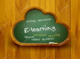

1. Retos y competencias para la educación del siglo XXI

La sociedad del siglo XXI, se puede denominar como la sociedad de la apertura a la conectividad, gracias a los diferentes avances tecnológicos e innovación constante en cuanto al desarrollo de contenidos y herramientas digitales, lo cual enmarca un nuevo entorno encaminado a las tecnologías de la información y la comunicación que ha transformado todos los contextos socioculturales, políticos, económicos, pero sobre todo educativo; la razón es que la rapidez del desarrollo de las nuevas tecnologías está induciendo a una nueva modalidad de analfabetismo, el analfabetismo informático.
Lo anterior determina que, para cumplir con los retos de la educación del siglo XXI, en primer lugar, se debe formar al docente en todo lo relacionado a competencias digitales, para que este pueda impartir sus conocimientos y apropiarlos a nuevas estrategias educativas, en congruencia con las potencialidades que ofrece el mundo de las TIC, colocando de manifiesto que los retos de la educación del siglo XXI, son:
- el desarrollo de procesos educativos a través del aprendizaje basado en competencias.
- colocar las nuevas tecnologías de la información y la comunicación, TIC, al servicio de la difusión del conocimiento.